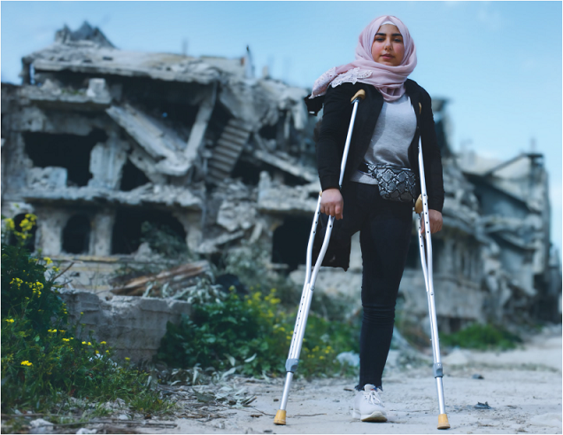
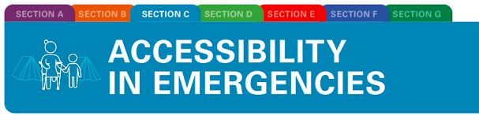

TOOLKIT ON ACCESSIBILITY

Tools to apply universal design across premises and programmes and promote access for all


2
Tools to apply universal design across premises and programmes and promote access for all

Tools to apply universal design across premises and programmes and promote access for all
© United Nations Children’s Fund (UNICEF) February 2022
Email: disabilities@unicef.org
Cover photo: © UNICEF/UNI310492/Al-Droubi
Email: disabilities@unicef.org
Editor and copy editor: Fabienne Stassen, EditOr Proof
Layout and graphic design: Big Yellow Taxi, Inc.
Web designer: Elias Constantopedos
Accessible formats: Prashant Ranjan Verma
4The toolkit is divided into seven sections and one Toolbox:


SECTION F: ORGANIZATION OF ACCESSIBLE EVENTS: suggestions on how to organize accessible events

SECTION G: ACCESSIBILITY CHECKLISTS: 17 checklists to use during accessibility assessments

Dr Omar Abdi, UNICEF Deputy Executive Director, Programmes:
Hannan Sulieman, UNICEF Deputy Executive Director, Management:
6

The toolkit is divided into seven sections and one Toolbox:
To summarize, information can be used at different points in the accessibility journey, such as:
9This toolkit contributes to the implementation of the United Nations Disability Inclusion Strategy and helps to achieve and exceed most of the strategy’s indicators: lack of physical accessibility, specifically recognized as one of the barriers to inclusion in Indicator 6 on Accessibility, 6.1 on Accessibility of conferences and events, Indicator 7 on Reasonable accommodation and Indicator 5 on Consultation with persons with disabilities. The toolkit helps to report on United Nations Country Team scorecards and to build the capacity of implementing partners on accessibility.

Convention on the Rights of Persons with Disabilities
The Convention on the Rights of Persons with Disabilities (CRPD) 1 is an international human rights treaty of the United Nations intended to protect the rights and dignity of persons with disabilities. It was adopted on 13 December 2006 and describes human rights frameworks linked to accessibility, aspects of universal design, reasonable accommodation and international standards for accessibility. UNICEF’s existing commitments and policies to promote accessibility are aligned with the CRPD.
In the 1980s, the American architect Ron Mace coined the term ‘universal design’, which means good design that benefits everyone. 2 Universal design is defined in the CRPD as “the design of products, environments, programmes and services to be usable by all people, to the greatest possible extent, without needing adaptation or specialized design” (article 2). 3
12Seven principles underpin the concept of universal design, summarized as follows:
Four steps ensure the accessibility continuum: reaching a facility; entering a facility; moving around a facility; and using specific features of a facility. 4 These align with the RECU methodology that stipulates that accessible facilities should be easy to reach, enter, circulate and use. 5
14 15Other considerations to promote inclusion include:
16For UNICEF programmes, ISO 21542 can be applied to all construction-related activities. While dimensions in the standard are geared primarily towards adults, it also recognizes that people across age levels have different needs, so it incorporates, for example, accessibility in toilets designed for children. In addition, accessibility for children is considered in this toolkit based on other existing guidelines and principles. 6
As part of the Sustainable Development Goal (SDG) framework, 7 accessibility of the built environment is referred to explicitly in the targets and indicators for:


Goal 11 – Make cities and human settlements inclusive, safe, resilient and sustainable

The New Urban Agenda emphasizes the importance of process and implementation in a “participatory manner”, which considers “innovative, resource-efficient, accessible, context-specific and culturally sensitive sustainable solutions”. 8
In 2018, as a follow-on to the Habitat III conference, the World Urban Forum in Malaysia issued the Kuala Lumpur Declaration, with an explicit paragraph on universal design, committing governments to “adopt accessibility and universal design as core principles into national, subnational and local action plans for implementing the New Urban Agenda through inclusive, accessible and participatory processes and consultations”. 9
During the twelfth Conference of States Parties to the Convention on the Rights of Persons with Disabilities, United Nations Secretary-General António Guterres launched the United Nations Disability Inclusion Strategy (UNDIS).
19This executive directive supplements the existing requirements for the accessibility of premises in Property and Equipment Policy, Supplement 6 – Guidelines for Premises Management and the UNICEF Greening and Accessibility Fund (GrAF) procedures. The GrAF was established in 2015, generated by a 3 per cent air travel surcharge, with 2 per cent of the fund to be used to finance eco-efficiency projects and 1 per cent to be used for accessibility projects (see also Section D of the toolkit).
20
Even though frameworks and guidelines take diversity more and more into consideration, disaster management and humanitarian assistance are often designed to provide standardized solutions to an affected community without sufficient regard for the needs of diverse populations, such as persons with disabilities and older people, among other groups. This gap must be filled to ensure assistance to all, without discrimination and on an equal basis. As a condition for inclusion, accessibility needs to be addressed as a core component of disaster risk management and humanitarian action. 10
Promoting more inclusive humanitarian action is a complex, multifold and ambitious objective that cannot be achieved without addressing all the general principles listed in article 3 of the Convention on the Rights of Persons with Disabilities (CRPD) and, in particular, non-discrimination, full and effective participation, equality of opportunities and accessibility.
According to the United Nations Office for the Coordination of Humanitarian Affairs (OCHA), in 2021, 235 million people will need humanitarian assistance and protection. This number has risen to 1 in 33 people worldwide – a significant increase from 1 in 45 at the launch of the Global Humanitarian Overview 2020, which at that time was already the highest figure in decades.11 11
Extending World Health Organization (WHO) estimates, 12 approximately 15 per cent of this population lives with some form of disability. They “face higher risks in conflict situations and natural disasters. Research shows that the mortality rate among persons with disabilities tends to be two to four times higher than among the general population, as demonstrated in cases with disabilities are disproportionately more likely to be left behind in emergency responses and to fail to benefit from humanitarian services due to ability range of environmental, physical and social barriers. A recent study has confirmed that three-quarters of persons with disabilities do not have adequate access to basic assistance, such as water, shelter or food, in a crisis situation. Half of the persons with disabilities being surveyed also reported no access to disability-specific services, such as rehabilitation or assistive devices.” 13
The CRPD provides the highest framework for inclusion in situations of risk and humanitarian emergencies in article 11: “States Parties shall take, in accordance with their obligations under international law, including international humanitarian law and international human rights law, all necessary measures to ensure the protection and safety of persons with disabilities in situations of risk, including situations of armed conflict, humanitarian emergencies and the occurrence of natural disasters.”
The Charter on Inclusion of Persons with Disabilities in Humanitarian Action specifically mentions the importance of eliminating barriers and adopting universal design in article 2.4: “[we commit to] (b) Strive to ensure that services and humanitarian assistance are equally available for and accessible to all persons with disabilities; (c) Work towards the elimination of physical, communication, and attitudinal barriers including through systematic provision of information for all in planning, preparedness and response, and strive to ensure the accessibility of services including through universal designin programming, policies and in all post-emergency reconstruction.”
The Sendai Framework for Disaster Risk Reduction 2015–2030 recognizes that “disaster risk reduction practices need to be multi-hazard and multisectoral, inclusive and accessible in order to be efficient and effective” (art. 7), and that “disaster risk
28Finally, the Sustainable Development Goals of Agenda 2030specifically address the WASH sector ( SDG 6 : Ensure availability and sustainable management of water and sanitation for all) and the shelter sector ( SDG 11 : Make cities and human settlements inclusive, safe, resilient and sustainable).
29From a technical point of view, when addressing an owner-driven reconstruction or, more generally, when rehabilitating existing buildings after an emergency in low- income contexts, it is good practice to use the 8 Build Back Safer Key Messages to guide the intervention.
These principles, however, do not take disability into account and they need to be adapted and integrated with other considerations in order to create accessible structures. A good reference can be found in the CBM publication Inclusive post- disaster reconstruction: Building back safe and accessible for all.
Post-disaster needs assessment
38
In humanitarian action, shelters are often built in large quantities, following standard designs to be ready to accommodate new residents. These standard designs should follow the principles of universal design to be appropriate for people with different abilities. At the same time, and in coherence with the Twin Track approach, individual adaptations and improvements over time should be cheap and easy to make, according to the needs of the occupants. The design of shelters should integrate the eight principles of Build Back Safer with accessibility considerations (see Section G , Checklists).
Barriers related to inappropriate SHELTERS
Further details are available in the checklists included in Section G of this toolkit.
39 40 41 42 43Source: Dilli, David, Accessibility and Tool Adaptation for Disabled Workers in Post-Conflict and Developing Countries , International Labour Office, Geneva, 1997.
44Preliminary accessibility measures
Accessibility measures while using the collective shelter
45Barriers related to inappropriate water source designs
For recommendations on how to design an accessible water point, please refer to checklist 16 in Section G of this toolkit.
46Being able to access and use a toilet facility independently, without the help of other people, is an essential condition of human dignity, self-confidence and autonomy. Ensuring that a certain number of toilets and latrines 19 are accessible is crucial in emergencies. As is the case for all infrastructure, not only should they be accessible, but it is essential that their access paths be accessible also, to ensure an unbroken chain of movement to and from toilets/latrines.
Barriers related to inappropriate latrine designs
47 48For recommendations on how to design an accessible toilet, please refer to the dedicated Checklist.
Accessibility considerations concerning DISTRIBUTION
50Accessibility considerations concerning the DISTRIBUTED KITS/ITEMS
51 52Hygiene promotion sessions (or other community mobilization events)
55
57
CBM, HelpAge International and Handicap International, Humanitarian inclusion standards for older people and people with disabilities (‘minimum standards’)
IASC, Guidelines: Inclusion Of Persons With Disabilities In Humanitarian Action
Sphere Association, The Sphere Handbook, 2018 Edition: ‘Humanitarian Charter and Minimum Standards in Humanitarian Response’
1. For more information, including the full text of the CRPD in multiple languages and the list of countries that have ratified it, see United Nations, Department of Economic and Social Affairs, Disability, Convention on the Rights of Persons with Disabilities (CRPD), United Nations, New York, 2006, <www.un.org/development/desa/disabilities/convention-on-the-rights-of-persons-with-disabilities.html> , accessed 7 September 2021. ↩︎
2. Ronald L. Mace Universal Design Institute (UDI), ‘A Brief History of Universal Design’, UDI, 2018, <www.udinstitute.org/ud-history> , accessed 7 September 2021. ↩︎
3. United Nations, Convention on the Rights of Persons with Disabilities, United Nations, New York, 2006, article 2, <www.un.org/development/desa/disabilities/convention-on-the-rights-of-persons-with-disabilities/article-2-definitions.html> , accessed 7 September 2021. ↩︎
4. These considerations are covered for each type of facility in the accessibility checklists ( Section G ). ↩︎
5. For more information on RECU, see Plantier-Royon, Eric, Priscille Geiser and Hugues Nouvellet, ‘Accessibility: How to design and promote an environment accessible to all’, Policy Brief 2, Handicap International (now Humanity for Inclusion), Lyon, 2009, <https://handicap-international.ch/sites/ch/ files/documents/files/accessibilite_anglais.pdf>, accessed 17 February 2022. ↩︎
6. See, for example, United Nations Children’s Fund, Accessible Components for the Built Environment: Technical Guidelines embracing Universal Design, UNICEF, New York, <https://docplayer. net/73698977-Accessible-components-for-the-built-environment-technical-guidelines-embracing- universal-design.html> , accessed 29 October 2021. ↩︎
7. For the complete set of SDGs, targets and indicators, see United Nations, Department of Economic and Social Affairs, Sustainable Development, ‘Make the SDGs a Reality’, United Nations, New York, <https://sustainabledevelopment.un.org> , accessed 29 October 2021. ↩︎
8. United Nations, United Nations Conference on Housing and Sustainable Urban Development, ‘New Urban Agenda’, United Nations, Ecuador, 2017, open PDF, paras. 37, 52, 53, 119, <http://habitat3.org/wp-content/uploads/NUA-English.pdf> , accessed 29 October 2021. ↩︎
9. United Nations, World Urban Forum, ‘Kuala Lumpur Declaration on Cities 2030’, United Nations, Kuala Lumpur, 13 February 2018, <https://unhabitat.org/sites/default/files/2018/04/Agenda-10-WUF9-KL-Declaration-English-1.pdf> , accessed 29 October 2021. ↩︎
10. This section of the toolkit focuses on accessibility in humanitarian action but also provides insight on accessibility in disaster risk management. ↩︎
11. United Nations Office for the Coordination of Humanitarian Affairs, ‘Global Humanitarian Overview 2021’, <https://gho.unocha.org> , accessed 6 August 2021. ↩︎
12. World Health Organization and World Bank, World Report on Disability, WHO, Geneva, 2011, <www. who.int/teams/noncommunicable-diseases/sensory-functions-disability-and-rehabilitation/world- report-on-disability> , accessed 6 August 2021. ↩︎
13. United Nations, Department of Economic and Social Affairs, Disability, ‘Disability-inclusive Humanitarian Action’, <www.un.org/development/desa/disabilities/issues/whs.html> , accessed 6 August 2021. ↩︎
14. Adapted from Inter-Agency Standing Committee (IASC) guidelines: see IASC, ‘Guidelines: Inclusion of Persons with Disabilities in Humanitarian Action’, 2019, <https://interagencystandingcommittee. org/system/files/2020-11/IASC%20Guidelines%20on%20the%20Inclusion%20of%20Persons%20 with%20Disabilities%20in%20Humanitarian%20Action%2C%202019_0.pdf> , accessed 6 August 2021. ↩︎
15. International Organization for Standardization, ‘ISO 21542:2011, Building construction – Accessibility and usability of the built environment’, <www.iso.org/standard/50498.html> , accessed 6 August 2021. ↩︎
17. Independent Living Institute, ‘A brief survey of studies on costs and benefits of non-handicapping environments’, 1994, <www.independentliving.org/cib/cibrio94access.html> , accessed 6 August 2021. ↩︎
18. International Federation of Red Cross and Red Crescent Societies, Handicap International and CBM, All Under One Roof: Disability-inclusive shelter and settlements in emergencies, IFRC, Geneva, 2015, p. 72. ↩︎
19. United Nations Children’s Fund, Including Children with Disabilities in Humanitarian Action: WASH, UNICEF, New York, 2017, <https://sites.unicef.org/disability/emergencies> , accessed 18 August 2021. ↩︎
20. Under revision; a new version will be available in 2021. Contact Sarah Hermon Duc: s.hermon- duc@hi.org. ↩︎
21. Adapted from International Organization for Standardization, ‘ISO 21542:2011 Building construction – Accessibility and usability of the built environment’, Introduction and para. 3.2, <www.iso.org/obp/ui/ fr/#iso:std:iso:21542:ed-1:v1:en:sec:11> , accessed 16 August 2021. ↩︎
22. International Organization for Standardization, ‘ISO 21542:2011 Building construction – Accessibility and usability of the built environment’, para. 3.4, <www.iso.org/obp/ui/#iso:std:iso:21542:en> , accessed 16 August 2021. ↩︎
© United Nations Children’s Fund (UNICEF) February 2022
United Nations Plaza, New York, NY, 10017, USA
Email: disabilities@unicef.org
The accessibility toolkit is available at: https://accessibilitytoolkit.unicef.org/